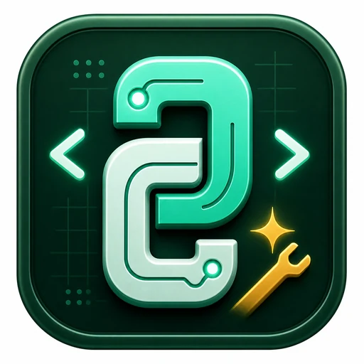

Laptop & PC Service
Fehleranalyse, Leistungsprobleme, Komponentenprüfung, Systempflege und sinnvolle Upgrade-Empfehlungen.
IT, PC & Laptop Dienstleistungen
Kompetenter Support für Laptops, PCs und kleine IT-Umgebungen: verständliche Diagnose, saubere Einrichtung, verlässliche Reparaturhilfe und klare Empfehlungen.
Leistungen
Vom langsamen Laptop bis zur neuen Arbeitsplatz-Einrichtung: die Unterstützung ist praxisnah, nachvollziehbar und auf dauerhafte Nutzung ausgelegt.
Fehleranalyse, Leistungsprobleme, Komponentenprüfung, Systempflege und sinnvolle Upgrade-Empfehlungen.
Virenschutz, Updates, sichere Konten, Passwort-Hygiene und verständliche Absicherung für Alltag und Arbeit.
Datensicherung, Wiederherstellungsstrategie, Cloud-Abgleich und geordnete Übergabe wichtiger Dateien.
WLAN, Drucker, Router, Peripherie und Arbeitsplatzgeräte so einrichten, dass sie zuverlässig zusammenspielen.
Windows, Programme, Konten, E-Mail, Browser, Sicherheitsoptionen und Datenübernahme sauber startklar machen.
Klare Einschätzung, verständliche Prioritäten und Hilfe bei Entscheidungen rund um Hardware, Software und Abläufe.
Diagnose statt Rätselraten
Gute IT-Hilfe beginnt mit einer ruhigen Analyse: Was ist kaputt, was ist nur falsch eingestellt, was lohnt sich wirklich und welche Lösung passt zum Budget?

Service in der Praxis
Reparatur, Beratung und Einrichtung gehören zusammen: erst zuhören, dann sauber prüfen und am Ende so erklären, dass die Lösung wirklich nutzbar ist.


Ablauf
Du beschreibst Problem, Gerät und Ziel. Je genauer die Ausgangslage, desto schneller die Einschätzung.
Die Ursache wird eingegrenzt, mögliche Risiken werden benannt und sinnvolle Wege werden verglichen.
Die vereinbarte Lösung wird strukturiert umgesetzt, getestet und bei Bedarf mit dir abgestimmt.
Du bekommst eine verständliche Zusammenfassung, damit das System danach sicher weiterläuft.
Ob Privatgerät, Homeoffice-Platz oder kleiner Firmenarbeitsplatz: Ziel ist nicht nur eine schnelle Reparatur, sondern ein Setup, das im Alltag ruhig und zuverlässig funktioniert.
Kontakt
Deine Anfrage wird über das Formular an die hinterlegte E-Mail-Adresse weitergeleitet. Alternativ kannst du auch direkt per E-Mail oder Telefon Kontakt aufnehmen.
Digitale Lernangebote, Spiele und Experimente von Sawazki Electronics.

Learning & Education PythonWerkstatt BG Python verstehen, direkt ausprobieren und mit Struktogrammen sicher planen Developed by Sawazki Electronics Learning & Exam Prep BM Lernportal Büromanagement verstehen, prüfungsnah üben und den eigenen Lernfortschritt sichern Developed by Sawazki Electronics